기계설계산업기사 (2018-08-19 기출문제)
1과목: 기계가공법 및 안전관리
1. 측정 오차에 관한 설명으로 틀린 것은?
- 기기 오차는 측정기의 구조상에서 일어나는 오차이다.
- 계통 오차는 측정값에 일정한 영향을 주는 원인에 의해 생기는 오차이다.
- 우연 오차는 측정자와 관계없이 발생하고, 반복적이고 정확한 측정으로 오차 보정이 가능하다.
- 개인 오차는 측정자의 부주의로 생기는 오차이며, 주의해서 측정하고 결과를 보정하면 줄일 수 있다.
(정답률: 73%)

2. 선반작업 시 절삭속도 결정조건으로 가장 거리가 먼 것은?
- 베드의 형상
- 가공물의 경도
- 바이트의 경도
- 절삭유의 사용유무
(정답률: 76%)
3. 센터 펀치 작업에 관한 설명으로 틀린 것은?
- 선단은 45도 이하로 한다.
- 드릴로 구멍을 뚫을 자리 표시에 사용된다.
- 펀치의 선단을 목표물에 수직으로 펀칭한다.
- 펀치의 재질은 공작물보다 경도가 높은 것을 사용한다.
(정답률: 78%)
4. 절삭공구 재료가 갖추어야할 조건으로 틀린것은?
- 조형성이 좋아야한다.
- 내마모성이 커야 한다
- 고온경도가 높아야 한다.
- 가공재료와 친화력이 커야 한다.
(정답률: 71%)
5. CNC 선반에서 나사 절삭 사이클의 준비기능 코드는?
- G02
- G28
- G70
- G92
(정답률: 56%)
6. 다음 중 전해가공의 특징으로 틀린 것은?
- 전극을 양극(+)에 가공물을 음극(-)으로 연결한다
- 경도가 크고 인성이 큰 재료도 가공능률이 높다
- 열이나 힘의 작용이 없으므로 금속학적인 결함이 생기지 않는다
- 복잡한 3차원 가공도 공구자국이나 버(burr)가 없이 가공할 수 있다
(정답률: 63%)
7. 바깥지름 원통 연삭에서 연삭숫돌이 숫돌의 반지름 방향으로 이송하면서 공작물을 연삭하는 방식은?
- 유성형
- 플런지 컷형
- 테이블 왕복형
- 연삭숫돌 왕복형
(정답률: 51%)
8. 나사를 1회전시킬 때 나사산이 축 방향으로 움직인 거리를 무엇이라 하는가
- 각도(angle)
- 리드(lead)
- 피치(pitch)
- 플랭크(flank)
(정답률: 78%)
9. 리머에 관한 설명으로 틀린 것은?
- 드릴 가공에 비하여 절삭속도를 빠르게하고 이송은 적게 한다
- 드릴로 뚫은 구멍을 정확한 치수로 다듬질하는데 사용한다
- 절삭속도가 느리면 리머의 수명은 길게되나 작업 능률이 떨어진다.
- 절삭속도가 너무 빠르면 랜드(land)부가 쉽게 마모되어 수명이 단축된다.
(정답률: 63%)
10. 공작기계의 메인 전원 스위치 사용 시 유의사항으로 적합하지 않는 것은?
- 반드시 물기 없는 손으로 사용한다
- 기계 운전 중 정전이 되면 즉시 스위치를 끈다
- 기계 시동 시에는 작업자에게 알리고 시동한다.
- 스위치를 끌 때에는 반드시 부하를 크게한다.
(정답률: 87%)
11. 밀링가공에서 커터의 날 수는 6개 1날 당의 이송은 0.2mm, 커터의 외경은 40mm 절삭속도는 30m/min일 때 테이블의 이송속도는 약 몇 mm/min인가?
- 274
- 286
- 298
- 312
(정답률: 58%)
12. 1대의 드릴링 머신에 다수의 스핀들이 설치되어 1회에 여러 개의 구멍을 동시에 가공할 수 있는 드릴링 머신은?
- 다두 드릴링 머신
- 다축 드릴링 머신
- 탁상 드릴링 머신
- 레이디얼 드릴링 머신
(정답률: 66%)
13. 정밀 입자 가공 중 래핑(lapping)에 대한 설명으로 틀린 것은?
- 가공면의 내마모성이 좋다.
- 정밀도가 높은 제품을 가공할 수 있다.
- 작업 중 분진이 발생하지 않아 깨끗한 작업환경을 유지할 수 있다.
- 가공면에 랩제가 잔류하기 쉽고, 제품을 사용할 때 잔류한 랩제가 마모를 촉진시킨다.
(정답률: 69%)
14. 절삭공구의 측면과 피삭재의 가공면과의 마찰에 의하여 절삭공구의 절삭면에 평행하게 마모되는 공구인선의 파손현상은?
- 치핑
- 크랙
- 플랭크 마모
- 크레이터 마모
(정답률: 69%)
15. 밀링가공 할 때 하향절삭과 비교한 상향절삭의 특징으로 틀린 것은?
- 절삭 자취의 피치가 짧고, 가공 면이 깨끗하다.
- 절삭력이 상향으로 작용하여 가공물 고정이 불리하다
- 절삭 가공을 할 때 마찰열로 접촉 면의 마모가 커서 공구의 수명이 짧다
- 커터의 회전방향과 가공물의 이송이 반대이므로 이송기구의 백래시(back lash)가 자연히 제거된다.
(정답률: 64%)
16. 수직 밀링 머신에서 좌우 이송을 하는 부분의 명칭은?
- 니(knee)
- 새들(saddle)
- 테이블(table)
- 컬럼(column)
(정답률: 66%)
17. 나사의 유효지름을 측정하는 방법이 아닌것은?
- 삼침법에 의한 측정
- 투영기에 의한 측정
- 플러그 게이지에 의한 측정
- 나사 마이크로미터에 의한 측정
(정답률: 55%)
18. 선반에서 지름 100mm의 저탄소 강재를 이송 0.25mm/rev, 길이 80mm를 2회 가공했을 때 소요된 시간이 80초라면 회전수는 약 몇 rpm인가?
- 450
- 480
- 510
- 540
(정답률: 49%)
19. 절삭유를 상용함으로써 얻을 수 있는 효과가 아닌 것은?
- 공구수명 연장 효과
- 구성인선 억제 효과
- 가공물 및 공구의 냉각 효과
- 가공물의 표면 거칠기 값 상승 효과
(정답률: 78%)
20. 센터리스 연삭기에 필요하지 않은 부품은?
- 받침판
- 양센터
- 연삭숫돌
- 조정숫돌
(정답률: 69%)
2과목: 기계제도
21. 축의 치수가 ø20±0.1이고 그 축의 기하공차가 다음과 같다면 최대 실제 공차방식에서 실효치수는 얼마인가?
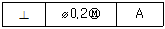
- 19.6
- 19.7
- 20.3
- 20.4
(정답률: 71%)
22. 앵글 구조물을 그림과 같이 한쪽 각도가 30°인 직각 삼각형으로 만들고자 한다. A의 길이가 1500mm일 때 B의 길이는 약 몇 mm인가?
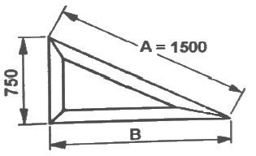
- 1299
- 1100
- 1131
- 1185
(정답률: 60%)
23. 다음과 같이 도면에 지시된 베어링 호칭번호의 설명으로 옳지 않은 것은?
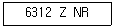
- 단열 깊은 홈 볼베어링
- 한쪽 실드붙이
- 베어링 안지름 312mm
- 멈춤링 붙이
(정답률: 82%)
24. 다음 기하공차 중 자세공차에 속하는 것은?
- 평면도 공차
- 평행도 공차
- 원통도 공차
- 진원도 공차
(정답률: 62%)
25. 다음과 같은 입체도에서 화살표 방향 투상도로 가장 적합한 것은?
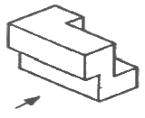
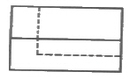
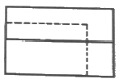
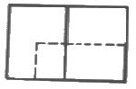
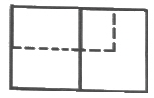
(정답률: 85%)
26. 끼워맞춤 치수 ø20 H6/g5는 어떤 끼워맞춤인가?
- 중간 끼워맞춤
- 헐거운 끼워맞춤
- 억지 끼워맞춤
- 중간 억지 끼워맞춤
(정답률: 72%)
27. 금속 재료의 표시 기호 중 탄소 공구강 강재를 나타낸 것은?
- SPP
- STC
- SBHG
- SWS
(정답률: 84%)
28. 나사의 표시가 다음과 같이 나타날 때 이에 대한 설명으로 틀린 것은?
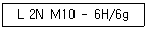
- 나사의 감김방향은 오른쪽이다
- 나사의 종류는 미터나사이다
- 암나사 등급은 6H, 수나사 등급은 6g이다
- 2줄 나사이며 나사의 바깥지름은 10mm이다
(정답률: 78%)
29. 그림과 같은 입체도를 제 3각법으로 나타낸 정투상도로 가장 적합한 것은?
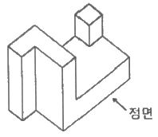
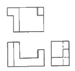
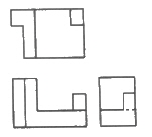
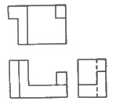
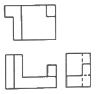
(정답률: 59%)
30. 물체의 경사진 부분을 그대로 투상하면 이해가 곤란하여 경사면에 평행한 별도의 투상면을 설정하여 나타낸 투상도의 명칭을 무엇이라고 하는가?
- 회전 투상도
- 보조 투상도
- 전개 투상도
- 부분 투상도
(정답률: 67%)
31. 그림과 같이 가공된 축의 테이퍼 값은 얼마인가?
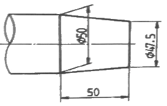
- 1/5
- 1/10
- 1/20
- 1/40
(정답률: 72%)
32. 그림과 같이 도면에 기입된 기하 공차에 관한 설명으로 옳지 않은 것은?
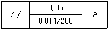
- 제한된 길이에 대한 공차값이 0.011이다
- 전체 길이에 대한 공차값이 0.⑤이다.
- 데이텀을 지시하는 문자기호는 A이다.
- 공차의 종류는 평면도 공차이다
(정답률: 78%)
33. 지름이 동일한 두 원통을 90도로 교차시킬 경우 상관선을 옳게 나타낸 것은?
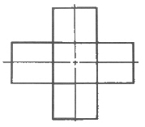
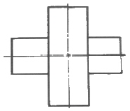
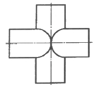
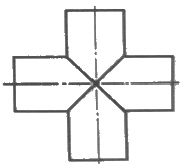
(정답률: 78%)
34. 다음 중 복렬 깊은 홈 볼 베어링의 약식 도시 기호가 바르게 표기된 것은?
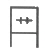
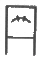
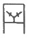
(정답률: 49%)
35. 다음과 같은 입체도를 제3각법으로 투상한 투상도로 가장 적합한 것은?
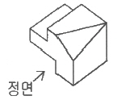
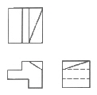
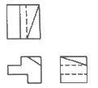
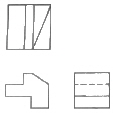
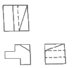
(정답률: 73%)
36. 다음 그림과 같이 도시된 용접기호의 설명이 옳은 것은?
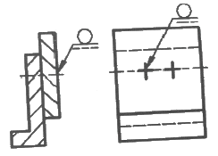
- 화살표 쪽의 점 용접
- 화살표 반대쪽의 점 용접
- 화살표 쪽의 플러그 용접
- 화살표 반대쪽의 플러그 용접
(정답률: 69%)
37. 축에 센터 구멍이 필요한 경우의 그림 기호로 올바른 것은?
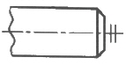
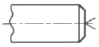
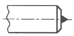
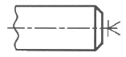
(정답률: 80%)
38. 다음 나사 기호 중 관용 평행 나사를 나타내는 것은?
- Tr
- E
- R
- G
(정답률: 56%)
39. 가상선의 용도에 해당되지 않은것은?
- 가공 전 또는 가공 후의 모양을 표시하는데 사용
- 인접부분을 참고로 표시하는데 사용
- 대상의 일부를 생략하고 그 경계를 나타내는데 사용
- 되풀이 되는 것을 나타내는데 사용
(정답률: 52%)
40. 가공 방법에 따른 KS 가공 방법 기호가 바르게 연결된 것은?
- 방전 가공 : SPED
- 전해 가공 : SPU
- 전해 연삭 : SPEC
- 초음파 가공 : SPLB
(정답률: 46%)
3과목: 기계설계 및 기계재료
41. 다음 중 철강에 합금 원소를 첨가하였을 때 일반적으로 나타내는 효과와 가장 거리가 먼것은?
- 소성가공성이 개선된다.
- 순금속에 비해 용융점이 높아진다
- 결정립의 미세화에 따른 강인성이 향상된다.
- 합금원소에 의한 기지의 고용강화가 일어난다.
(정답률: 48%)
42. 다음 중 니켈-크롬강(Ni-Cr)에서 뜨임취성을 방지하기 위하여 첨가하는 원소는?
- Mn
- Si
- Mo
- Cu
(정답률: 59%)
43. 비정질합금의 특징을 설명한 것 중 틀린것은?
- 전기저항이 크다.
- 가공경화를 매우 잘 일으킨다
- 균질한 재료이고 결정이방성이 없다
- 구조적으로 장거리의 규칙성이 없다
(정답률: 37%)
44. 금속 침투법 중 철강 표면에 AI을 확산침투 시켜 표면처리 하는 방법은?
- 세라다이징
- 크로마이징
- 칼로라이징
- 실리코나이징
(정답률: 72%)
45. 다음 금속재료 중 용융점이 가장 높은 것은?
- W
- Pb
- Bi
- Sn
(정답률: 68%)
46. 다음 철강 조직 중 가장 경도가 높은 것은?
- 펄라이트
- 소르바이트
- 마텐자이트
- 트루스타이트
(정답률: 73%)
47. 다음 중 Cu + Zn계 합금이 아닌 것은?
- 톰백
- 문쯔메탈
- 길딩메탈
- 하이드로날륨
(정답률: 61%)
48. 다음 중 세라믹 공구의 주성분으로 가장 적합한 것은?
- Cr2O3
- Al2O3
- MnO2
- Cu3O
(정답률: 75%)
49. 다음 중 펄라이트의 구성 조직으로 옳은 것은?
- a-Fe + Fe3S
- a-Fe + Fe3C
- a-Fe + Fe3P
- a-Fe + Fe3Na
(정답률: 67%)
50. 복합재료 중 FRP는 무엇인가?
- 섬유 강화 목재
- 섬유 강화 금속
- 섬유 강화 세라믹
- 섬유 강화 플라스틱
(정답률: 81%)
51. 다음 중 스프링의 용도로 거리가 먼 것은?
- 하중과 변형을 이용하여 스프링 저울에 사용
- 에너지를 축적하고 이것을 동력으로 이용
- 진동이나 충격을 완화하는데 사용
- 운전 중인 회전축의 속도조절이나 정지에 이용
(정답률: 68%)
52. 리베팅 후 코킹(caulking)과 풀러링(fullering)을 하는 이유는 무엇인가?
- 기밀을 좋게 하기 위해
- 강도를 높이기 위해
- 작업을 편리하게 하기 위해
- 재료를 절약하기 위해
(정답률: 72%)
53. 다음 중 두 축이 평행하거나 교차하지 않으며 자동차 차동기어장치의 감속 기어로 주로 사용되는 것은?
- 스퍼 기어
- 래크와 피니언
- 스파이럴 베벨 기어
- 하이포이드 기어
(정답률: 48%)
54. 그림과 같이 외접하는 A, B, C, 3개의 기어에 잇수는 각각 20, 10, 40이다. 기어 A가 매분 10회전하면, C는 매분 몇 회전 하는가?
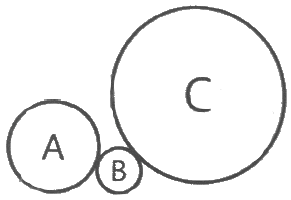
- 2.5
- 5
- 10
- 12.5
(정답률: 65%)
55. 다음 중 체결용 기계요소로 거리가 먼 것은?
- 볼트, 너트
- 카, 핀, 코터
- 클러치
- 리벳
(정답률: 76%)
56. 다음 중 체인전동장치의 일반적인 특징이 아닌 것은?
- 미끄럼이 없는 일정한 속도비를 얻을 수있다.
- 진동과 소음이 없고 회전각의 전달정확도가 높다.
- 초기 장력이 필요 없으므로 베어링 마멸이 적다.
- 전동 효율이 대략 95% 이상으로 좋은 편이다.
(정답률: 62%)
57. 24⑤N*m의 토크를 전달시키는 지름 85mm의 전동축이 있다. 이 축에 사용되는 묻힘키(sunk key)의 길이는 전단과 압축을 고려하여 최소 몇 mm 이상이어야 하는가? (단, 키의 폭은 24mm, 높이는 16mm 이고, 키 재료의 허용전단응력은 68.7MPa, 허용압축응력은 147.2Mpa 이며, 키 홈의 깊이는 키 높이의 1/2로 한다.)
- 12.4
- 20.1
- 28.1
- 48.1
(정답률: 21%)
58. 4000rpm으로 회전하고 기본 동정격하중이 32kN인 볼 베어링에서 2kN의 레이디얼 하중이 작용할 때 이 베어링의 수명은 약 몇 시간인가?
- 9048
- 17066
- 34652
- 54828
(정답률: 44%)
59. 사각나사의 유효지름이 63mm, 피치가 3mm 인 나사잭으로 5t의 하중을 들어올리려면 레버의 유효길이는 약 몇 mm 이상이어야 하는가? (단, 레버의 끝에 작용시키는 힘은 200N이며 나사 접촉부 마찰계수는 0.1이다.)
- 891
- 958
- 1024
- 1168
(정답률: 18%)
60. 그림과 같은 단식 블록 브레이크에서 드럼을 제동하기 위해 레버(lever) 끝에 가할 힘(F)을 비교하고자 한다. 드럼이 좌회전할 경우 필요한 힘을 F1 우회전할 경우 필요한 힘을 F2 라고 할 때 이 두힘의 차이(F1-F2)는? (단, P는 블록과 드럼사이에서 블록의 접촉면에 수직방향으로 작용하는 힘이며, u는 접촉부 마찰계수이다.)
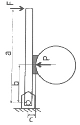
- F1 – F2 = -(μPc / a)
- F1 – F2 = μPc / a
- F1 – F2 = -(2μPc / a)
- F1 – F2 = 2μPc / a
(정답률: 38%)
4과목: 컴퓨터응용설계
61. 번스타인 다항식(Bernstein polynomial)을 근본으로 하여 만들어낸 표면은?
- 이차식 표면(Auadric surface)
- 베지어 표면(Bezier surface)
- 스플라인 표면(Spline surface)
- 헤르밋 표면(Hermite surface)
(정답률: 58%)
62. 컴퓨터의 구성요소 중 중앙처리장치(CPU)의 3가지 주요 요소가 아닌 것은?
- 제어장치(control unit)
- 연산장치(ALU)
- 기억장치(memory unit)
- 입출력장치(input output unit)
(정답률: 63%)
63. 8비트 ASCII 코드는 몇 개의 패리티비트를 사용하는가?
- 1개
- 2개
- 3개
- 4개
(정답률: 46%)
64. 지구의 중심에 원짐을 설정한 구면 좌표계(spherical coordinate system)에서 경도 30도(동경), 위도 60도(북위)에 있는 점을 직교좌표계 값으로 변환한 것으로 옳은 것은? (단, 지구의 반경은 1로 가정하고, x축은 위도와 경도가 모두 0인 축으로 한다.)
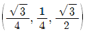
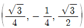
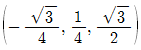
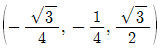
(정답률: 32%)
65. CAD에서 사용하는 기하학적 형상의 3차원 모델링 방법이 아닌 것은?
- 와이어 프레임(wire frame) 모델링
- 서피스(surface) 모델링
- 솔리드(solid) 모델링
- 윈도우(window) 모델링
(정답률: 80%)
66. 서피스 모델링의 특징으로 거리가 먼 것은?
- 관성모멘트 값을 계산할 수 있다.
- 표면적 계산이 가능하다.
- NC data를 생성할 수 있다.
- 은선이 제거될 수 있고 면의 구분이 가능하다.
(정답률: 58%)
67. 화면에 영상을 구성하기 위해서는 최소한 1픽셀(pixel)당 1비트가 소요된다. 이와 같이 하나의 화면을 구성하는데 소요되는 메모리를 무엇이라고 하는가?
- 룩업(look up) 테이블
- DAC
- 비트 플레인(bit plane)
- 버퍼(buffer)
(정답률: 62%)
68. 자동차 자체 곡면과 같이 곡면모델링 시스템을 활용하여 곡면을 생성하고자 한다. 이를 생성하기 위해 주로 사용하는 방법 3가지로 가장 거리가 먼 것은?
- 곡면상의 점들을 입력받아 보간 곡면을 생성한다.
- 곡면상의 곡선들을 그물 형태로 입력받아 보간 곡면을 생성한다.
- 주어진 단면 곡선을 직선 또는 최전 이동하여 곡면을 생성한다
- 곡면의 경계에 있는 꼭지점만을 입력받아 보간곡면을 생성한다.
(정답률: 50%)
69. 곡면을 모델링하는 여러 방법들 중에서 평면도, 정면도, 측면도상에 나타난 곡면의 경계곡선들로부터 비례적인 관계를 이용하여 곡면을 모델링(modeling)하는 방법은?
- 점 데이터에 의한 방식
- 쿤스(coons)방식
- 비례 전개법에 의한 방식
- 스윕(sweep)에 의한 방식
(정답률: 60%)
70. PC가 빠르게 발전하고 성능이 발달됨에 따라 윈도우 기반 CAD 시스템이 발달되었다. 다음중 윈도우 기반 CAD시스템의 일반적인 특징으로 보기 어려운 것은?
- 컴퓨터 장치의 발전에 따라 대형 컴퓨터가 중앙에서 관리하는 중앙 집중 관리 방식의 CAD 시스템이 발전되었다.
- 구성요소 기술(component technology)을 사용하여 기 검증된 구성요소들을 결합시켜 시스템을 개발할 수 있다.
- 객체지향 기술(object-oriented technology)을 사용하여 다양한 기능에 따라 프로그램을 모듈화시켜 각 모듈을 독립된 단위로 재사용한다.
- 파라메트릭 모델링(parametric modeling) 기능을 제공하여 사용자가 요소의 형상을 직접 변형시키지 않고, 구속조건(constraints)을 사용하여 형상을 정의 또는 수정한다.
(정답률: 52%)
71. 설계해석 프로그램의 결과에 따라 응력, 온도 등의 분포도나 변형도를 작성하거나, CAD 시스템으로 만들어진 형상 모델을 바탕으로 NC공작기계의 가공 data를 생성하는 소프트웨어 프로그램이나 절차를 뜻하는 것은 무엇인가?
- Post-processor
- Pre-processor
- Multi-processor
- Co-processor
(정답률: 57%)
72. 잉크젯 프린터 등의 해상도를 나타내는 단위는?
- LPM
- PPM
- DPI
- CPM
(정답률: 73%)
73. 점 P(x, y, z)가 xy평면에 직교 투영되는 경우 나타내는 투영 P*를 생성하는 변환행렬식으로 옳은 것은?
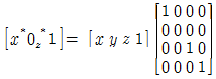
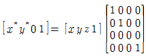
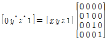
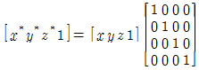
(정답률: 42%)
74. 산업현장에서 컴퓨터를 활용한 제품 설계(CAD)와 컴퓨터를 활용한 제품 생산(CAM)이 많이 활용되고 있다. 다음 중 CAD의 응용 분야에 속하는 것은?
- 컴퓨터 이용 공정 계획
- 컴퓨터 이용 제품 공차 해석
- 컴퓨터 이용 NC 프로그래밍
- 컴퓨터 이용 자재 소요계획
(정답률: 49%)
75. 그림과 같은 선분 A의 양 끝점에 대한 행렬 값
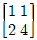
를 원점을 기준으로 하여 x방향과 y방향으로 각각 3배만큼 스케일링(scaling)할 때 그 행렬 결과 값으로 옳은 것은?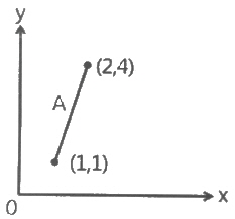
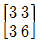
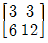
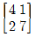
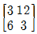
(정답률: 70%)
76. CAD시스템에서 이용되는 2차 곡선방정식에 대한 설명으로 거리가 먼 것은?
- 매개변수식으로 표현하는 것이 가능하기도 하다.
- 곡선식에 대한 계산시간이 3차, 4차식보다 작게 걸린다.
- 연결된 여러 개의 곡선사이에서 곡률의 연속이 보장된다.
- 여러 개 곡선을 하나의 곡선으로 연결하는 것이 가능하다.
(정답률: 47%)
77. 3차원 공간에서 y축을 중심으로 ϴ만큼 회전했을 때의 변환행렬(4×4)로 옳은 것은? (단, 변환행렬식은 다음과 같다.)(오류 신고가 접수된 문제입니다. 반드시 정답과 해설을 확인하시기 바랍니다.)
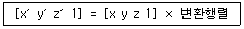
(정답률: 40%)
78. 2차원 도형을 임의의 선을 따라 이동시키거나 임의의 회전축을 중심으로 회전시켜 입체를 생성하는 것을 나타내는 용어는?
- 블랜딩
- 스위핑
- 스키닝
- 라운딩
(정답률: 60%)
79. 공간상의 한 점을 표시하기 위해 사용되는 좌표계로 xy 평면으로 한 점을 투영했을 때 원점으로부터 투영점까지의 거리(r), x축과 원점과 투영점이 지나는 직선과의 각도(ϴ), xy 평면과 그 점의 높이(z)로써 나타내어지는 좌표계는?
- 직교 좌표계
- 극 좌표계
- 원통 좌표계
- 구면 좌표계
(정답률: 54%)
80. CSG 모델링 방식에서 불 연산(boolean operation)이 아닌 것은?
- Union(합)
- Subtract(차)
- Intersect(적)
- Project(투영)
(정답률: 73%)